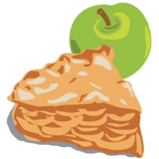
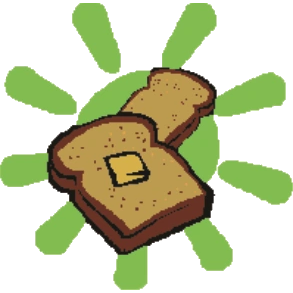
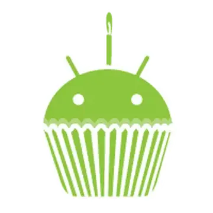
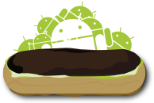
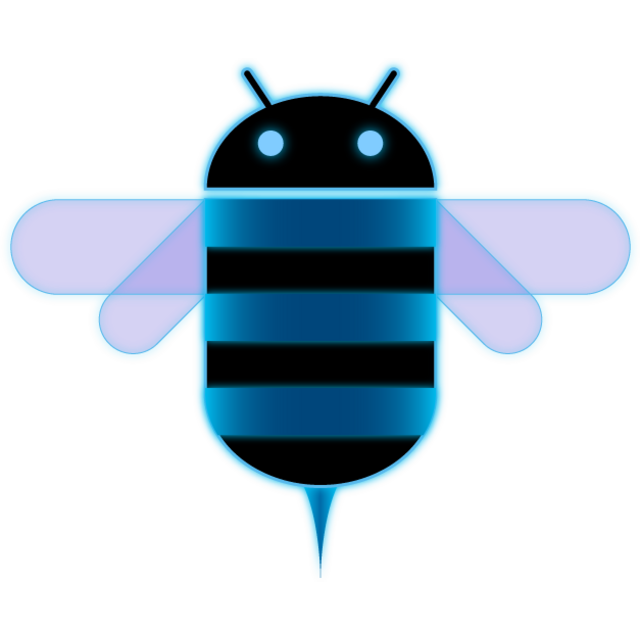
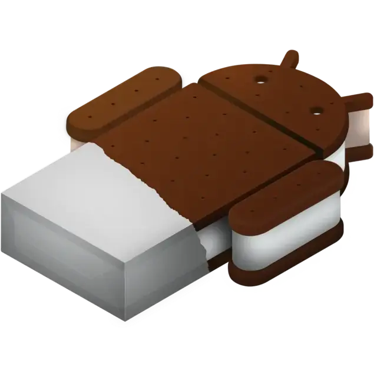
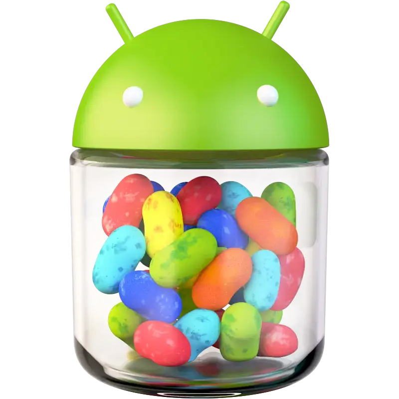
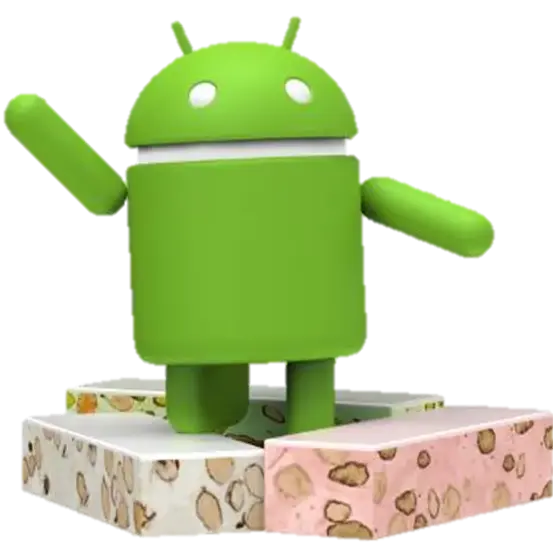
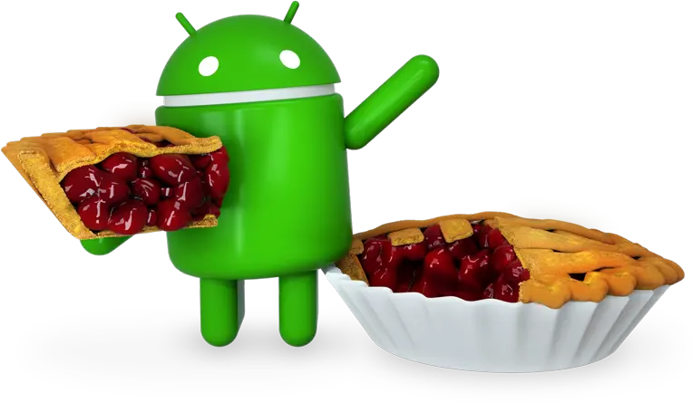
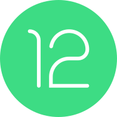

Android Versions
From pie to bun, this will show you Android's version history through Bugdroid's appearances in version logos. Primary focus is on features that most users know and use.
 |
1.0 Apple Pie The first major release! It had the Android Market, a web browser, camera support, Google Search, and a whole other bunch of goodies! |
 |
1.1 Banana Bread (or Petit Four) Android Market leaves beta, System Update gets added to Settings, and useful information in Google Maps. This was the first release that the Open Handset Alliance was here to see. |
 |
1.5 Cupcake Support for third-party on-screen keyboards, custom widgets, and video playback. It also had some features to link with fellow Google properties YouTube and Picassa. |
| 1.6 Donut New speech synthesis that is multilingual, Quick Search engine that supported third-party apps, ability to display is various display sizes. |
|
 |
2.0/2.1 Eclair Live wallpapers, revamped UI, and auto-brightness. More expansions to the account system, multiple Google and Exchange accounts could be added. |
| 2.2 Froyo Better lock screen choices. USB tethering and Wi-Fi hotspot functions. Adobe Flash, file uploads, and new JavaScript updates for the browser. |
|
| 2.3 Gingerbread Native VoIP support, WebM/ACC playback, NFC usage, and copy/paste functions. Alongside the new Download Manager for any app that needs it. |
|
 |
3.0 Honeycomb (for tablets) Brand new "holographic" user interface debuts. Resizable widgets, encryption, video calling, USB accessory support. |
 |
4.0 Ice Cream Sandwich Debut of the Roboto font. Face Unlock and 1080p video support. Wi-Fi Direct, Android Beam, and Data Usage tools. |
 |
4.1 Jellybean Rich notification cards, Google Now, and Project Butter integration. |
| 4.4 KitKat Debut of "Ok Google" and immersive mode. Known as Internal Key Lime Pie before the brand deal with Nestle/Hershey's. |
|
| 5.0 Lollipop Debut of Material Design and lock screen notifications. |
|
| 6.0 Marshmallow Permission system overhaul. Fingerprint and USB-C support. |
|
 |
7.0 Nougat Split-screen multitasking. Ability to reply to directly in message notifications. |
| 8.0/8.1 Oreo Picture-in-Picture for video players, also used in Google Maps. Start of notification categories. |
|
 |
9 Pie New gesture navigation and adaptive battery features. Debut of Digital Wellbeing. |
| 10 "Q" Loss of desserts. Dark mode debuts in Settings. |
|
| 11 "Red Velvet Cake" Built-in screen recorder, chat bubbles for messaging apps, and temporary permission grants. |
|
 |
12/12L "Snow Cone" Material You debuts. Additional "12L" released for tablets. |
| 13 "Tiramisu" Universal media picker so apps will not have access to all photos/videos by default. Notifications now need permission to start. |
|
| 14 "Upside Down Cake" Lock Screen customizability, better back gesture motions, and Ultra HDR support. |
|
| 15 "Vanilla Ice Cream" Private Space app folder, screen share controls, and app archiving. |
|
| 16 "Baklava" New Desktop mode for compatible docks, audio sharing, and Health Connect for compatible apps. |
|
| 17 "Cinnamon Bun" Almost any app can appear as a 'Bubble' in the same manner as chats. |